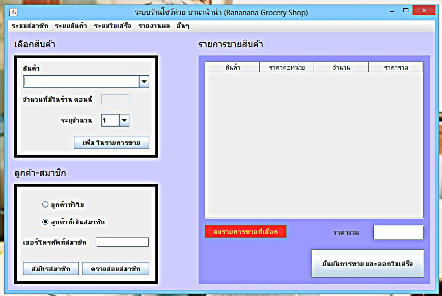
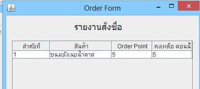
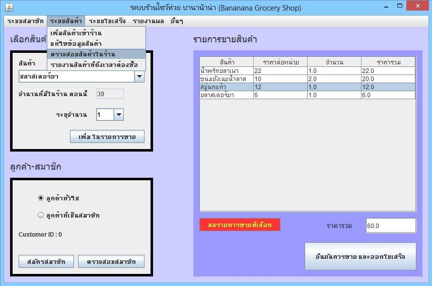
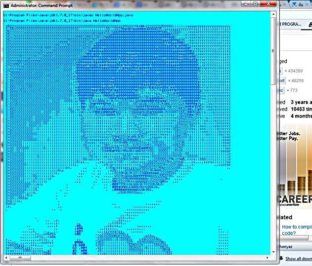

<style>
    .ban_style{
        color: white;
        background-color: orangered;
    }
    .ban_style h2 {
        color: white;
    }
    .ban_white{
        color: black;
        background-color: white;
    }
    @media only screen and (min-width: 700px) {
        #javaman {width: 75%;}
        #javaman2{width: 75%;}
        #javaman3 {width: 50%;}
        #javaman4{width: 75%;}
        .ban_style {
            padding-top: 10px;
            padding-bottom: 10px;
        }
        .ban_white {
            padding-top: 10px;
            padding-bottom: 10px;
        }
    }
    @media only screen and (max-width: 699px) {
        #javaman{width: 100%;}
        #javaman2{width: 100%;}
        #javaman3{width: 90%;}
        #javaman4{width: 100%;}
    }
</style>
<ion-view view-title="Java">
    <ion-content overflow-scroll="true">
        <div class="rowly ban_style">
            <div class="coly-1"></div>
            <div class="coly-10">
                <h2><b><span class="now_rap">โปรแกรมสำหรับร้านขายของ</span>
                    <span class="now_rap"> (ร้านโชว์ห่วย)</span></b></h2>
                <br/>
                <div align="center">
                    
                </div>
                <br/>
                <div class="story_text">
                    &nbsp;&nbsp;&nbsp;&nbsp; เป็นโปรเจคตอน ปี 3 ในวิชา System Analysis (SA) โดยมีการวิเคราะห์ถึงสิ่งที่ระบบต้องมี
                    โดยผมต้องเขียนโปรแกรมให้ข้อมูลไหลตาม DFD (Data Flow Diagram) โดยในบทที่ 2 มีการพูดถึงปัญหา ด้วยแผนภูมิก้างปลา
                    ทำให้เรามองเห็นภาพรวมของปัญหา เราจะได้เขียนโปรแกรมได้ตรงจุด ส่วนตัวโปรแกรมนั้นมี Feature ดังนี้
                    <br/><br/>
                    &nbsp;&nbsp;&nbsp;&nbsp; - มีระบบสมาชิก <br/>
                    &nbsp;&nbsp;&nbsp;&nbsp; - มีระบบคลังสินค้า (หลังร้าน)<br/>
                    &nbsp;&nbsp;&nbsp;&nbsp; - มีระบบหน้าร้านสำหรับพนักงานขาย<br/>
                    &nbsp;&nbsp;&nbsp;&nbsp; - มีการแจ้งเตือน สินค้าใกล้หมด เมื่อเปิด/ปิดโปรแกรม 
                    (ตอนที่เพิ่มสินค้า เจ้าของร้านต้องกำหนด Order Point เพื่อบอกจำนวนเมื่อสินค้าใกล้หมด)<br/>
                    <div align="center">
                        <br/>
                        
                        <br/><br/>
                    </div>
                    - ในระหว่างที่ลูกค้าเลือกสินค้า ถ้าลูกค้า เกิดเปลี่ยนใจ ไม่เอาสินค้า สามารถลบสินค้าได้ #ก่อนออกใบเสร็จ
                    <div align="center">
                        <br/>
                        
                        <br/><br/>
                    </div>
                    <b>ความรู้ที่ใช้ : </b>Java Swing(GUI) , Functional Programming , Basic SA , DFD , ER-Diagram , Cause & Effect Diagram (Fish Bone Diagram)
                    <br/><br/>
                    <b>ฐานข้อมูล : </b> MySQL<br/><br/>
                </div>
            </div>
            <div class="coly-1"></div>
        </div>
        <div class="rowly ban_white">
            <div class="coly-1"></div>
            <div class="coly-10">
                <h2><b>Hello World <span class="now_rap">(แนะนำตัวผ่าน CMD)</span></b></h2>
                <br/>
                <div align="center">
                    
                </div>
                <br/>
                <div class="story_text">
                    &nbsp;&nbsp;&nbsp;&nbsp; ตอนขึ้นปี 3 ได้มีโอกาสเรียน java วันแรกๆอาจารย์สอนเขียน Hello World และให้
                    การบ้าน เขียนแนะนำตัวผ่าน Command Line จริงๆแล้วก็แค่ เปลี่ยนคำว่า Hello World เป็นข้อมูลของเรา แต่ผมมองว่ามันง่ายไป
                    และผมอยากทำอะไรที่มันแตกต่าง ก็เลยออกมาแบบนี้ล่ะครับ ...

                    <br/><br/>
                    <b>ความรู้ที่ใช้ : </b>Javac , การแปลงรูปเป็นตัวหนังสือ
                    <br/><br/>
                </div>
            </div>
            <div class="coly-1"></div>
        </div>
    </ion-content>
</ion-view>

